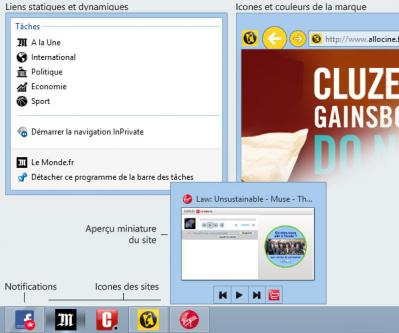
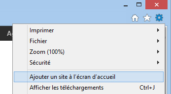
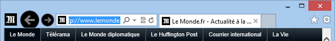
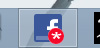
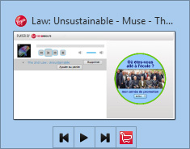
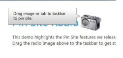
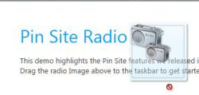

Avec Windows 7 est apparue la possibilité d'épingler des programmes dans la barre des tâches. Internet Explorer (depuis la version 9) propose une fonctionnalité d'épinglage avancé : Il suffit de déplacer l'onglet d'une page vers la barre des tâches pour y trouver de nouvelles actions possibles. Ces fonctionnalités se paramètrent sur votre propre site, nous allons donc voir comment.
Fonctionnalités de sites épinglés
Pour la première partie, un minimum de connaissances en HTML est requis, je vous conseille donc le tutoriel officiel du site. Les parties HTML seront suffisamment détaillées pour que les moins expérimentés s'y retrouvent.
Pour la seconde partie, facultative, mais non moins intéressante, vous aurez également besoin de bonnes connaissances en Javascript. Ces parties sont réservées à des développeurs plus avancés, et de fait seront plus indicatives qu'explicatives. Il vous faudra donc être familier avec les fonctions et les variables.
Il existe plusieurs façons pour un utilisateur d'épingler un site.
Dans Windows 7 et 8 (en mode bureau), il suffit de faire glisser l'onglet du site ou le favicon (icône du site) vers la barre des tâches pour que le site s'épingle seul. Il est également possible d'utiliser le menu Outils (Alt + o), puis de sélectionner "Ajouter le site au menu démarrer", mais le raccourci se place dans le menu et non sur la barre des tâches.
Ajouter un site à l'écran d'accueil, sous Windows 8
Dans Windows 8 (en mode Metro), il y a un bouton "Épingler à l'écran d'accueil" dans la barre de navigation en bas de la fenêtre d'Internet Explorer 10.
Il est également possible de créer des outils d'épinglage (boutons, barres), comme nous le verrons par la suite.
Les modifications d'interface
Lorsqu'un site est lancé depuis un raccourci épinglé, l'interface change légèrement par rapport à une fenêtre normale d'Internet Explorer. Le bouton accueil à droite disparaît, l'icône du site est affichée à gauche des boutons de navigation, et ceux-ci adoptent une couleur différente.
Un exemple de site épinglé
La barre des tâches, mais pas seulement !
Il existe également une petite subtilité : si vous glissez le site non pas sur la barre des tâches mais sur le bouton du menu Démarrer (uniquement pour Windows 7 donc), votre site et ses raccourcis apparaîtront dans celui-ci.
Il faut savoir que n'importe quel site peut être épinglé à la barre de tâche, il n'y a rien à faire pour rendre un site épinglable ou non. Ce que nous allons faire tout au long de ce tutoriel, c'est personnaliser cet épinglage ; pour commencer, nous allons voir quelques informations de personnalisation de base à donner au site par le biais des métadonnées.
Les métadonnées d'installation
Ces éléments permettent de définir plusieurs paramètres qui seront enregistrés lors de l'épinglage du site, et donc de la création du raccourci. Ce sont des éléments facultatifs, mais recommandés.
application-name
La première chose que l'on pourrait vouloir faire, c'est modifier le nom affiché dans la fenêtre d'information, qui apparaît lors du clic droit sur l'icône d'un site épinglé. En effet, par défaut il sera affiché le contenu de la balise <title> du document lié.
Ajoutons donc une métadonnée afin de choisir nous-mêmes ce qui sera affiché par le lien de base :
<meta name="application-name" content="Un beau site épinglable">
Le résultat est immédiat, le nom du lien vers le site est transformé selon nos souhaits.
msapplication-tooltip
Il est également possible d'ajouter une infobulle qui apparaîtra lors du survol de l'icône.
<meta name="msapplication-tooltip" content="Cliquez pour vous rendre sur un magnifique site !">
msapplication-starturl
Il faut savoir que, par défaut, la page qui s'ouvrira lorsqu'un utilisateur cliquera sur le bouton du site épinglé sera celle qu'il visitait au moment où il l'a épinglé. S'il était sur une page obscure du fin fond de votre site, c'est cette page qu'il verra chaque fois qu'il ouvrira votre site par le biais de l'icône épinglée.
Pour choisir vous-même quelle URL sera lancée au moment de l'ouverture, vous pouvez utiliser ce code :
<meta name="msapplication-starturl" content="./">
Ici, on demande au site de toujours s'ouvrir à la racine (l'index). On pourrait mettre n'importe quelle adresse, soit absolue (de forme http://www.monsite.com), soit relative à la page en cours (de forme /test.html).
msapplication-window
Par défaut, lors de la première ouverture d'un site épinglé, la fenêtre ouverte aura une taille de 800×600 pixels. Par la suite, la taille conservée sera celle qu'aura décidé l'utilisateur en redimensionnant ladite fenêtre.
Cependant, il peut être judicieux de vouloir faire en sorte que le premier affichage soit plus grand. Et c'est possible avec cette balise meta :
Height représente bien sûr la hauteur, et width la largeur.
Les métadonnées d'exécution
Ces paramètres sont lus à chaque fois que le site épinglé est ouvert. Les données peuvent donc être facilement mises à jour.
msapplication-navbutton-color
Comme je le disais plus tôt, lorsqu'un site est lancé depuis un raccourci épinglé (on parle de mode site), l'interface est légèrement modifiée par rapport au site ouvert normalement. Par exemple, les boutons précédents et suivants adoptent une couleur adaptée au site ; par défaut, Internet Explorer choisit cette couleur parmi les dominantes principales du site. Là encore, vous pouvez choisir vous-même cette couleur :
Le plus simple pour commencer, est de pouvoir ajouter des liens statiques, appelés "tâches" (jumplists en anglais). Ces liens ont pour but de rediriger vers des pages pérennes de votre site.
Les tâches de base (statiques) sont définies par des balises de métadonnées (meta). Vous pouvez créer jusqu'à cinq tâches, qui apparaîtront dans la catégorie "Tâches".
Voici la balise en question, qui se définit par la valeur de name "msapplication-task".
<meta name="msapplication-task" content="">
Les valeurs possibles de content sont au nombre de quatre, et doivent être séparées par un point-virgule. Voici un tableau des différentes valeurs possibles et de leur utilité :
Nom
Description
name
Nom de la tâche, qui apparaît dans la liste.
action-uri
L'adresse qui sera ouverte lorsque l'élément sera cliqué, et qui peut être absolue ou relative.
icon-uri
Une icône (image ou fichier icône) qui sera affichée juste en face du lien. L'adresse de l'icône peut également être absolue ou relative.
window-type
Permet de définir le mode d'ouverture de la page liée.
tab (valeur par défaut) : Nouvel onglet dans la fenêtre actuelle
window : Nouvelle fenêtre
self : Onglet actuel
Par exemple, pour créer un lien vers un blog, avec une icône personnalisée, on pourrait faire ceci :
<meta name="msapplication-task" content="name=Le Blog !;action-uri=http://monblog.com;icon-uri=blog.ico">
Ou pour faire un lien vers une page Twitter en utilisant leur favicon comme icône :
Il est également possible de créer des tâches dynamiquement, en utilisant du Javascript. Ces tâches peuvent être par exemple les derniers articles d'un blog, vos derniers tweets, ou bien les derniers commentaires d'une vidéo. Vous pouvez créer jusqu'à vingt tâches dynamiques, mais seules les dix dernières seront affichées.
Vérification du mode site
Lorsque le site est ouvert depuis un raccourci épinglé, on dit qu'il est en mode site. Il sera donc utile de vérifier en Javascript si le site est exécuté avec ce mode ou pas. Pour ça, il existe une méthode msIsSiteMode().
Nous pouvons créer une fonction simple de vérification, et attribuer le résultat à une variable :
var siteMode = testSiteMode();
// Teste si le site a été lancé depuis un raccourci épinglé (mode site);
function testSiteMode()
{
try {
if (window.external.msIsSiteMode()) {
return true;
}
}
catch(e) {
return false;
}
}
Ainsi, il n'y aura plus qu'à tester la variable siteMode par la suite.
Créer une liste vide
Avant de pouvoir ajouter des liens à une liste, il faut créer une liste grâce à la méthode msSiteModeCreateJumpList().
window.onload = function()
{
try {
if (siteMode) {
// Créer la nouvelle liste
window.external.msSiteModeCreateJumpList('Liste Dynamique');
}
}
catch (e) {
// Echec, ne rien faire
}
}
Ainsi, une nouvelle catégorie est ajoutée au-dessus des "Tâches".
Il peut également être utile de remettre à zéro une liste, par exemple à la demande de l'utilisateur, ou pour mettre à jour des liens. Pour cela il existe la méthode msSiteModeClearJumpList().
window.onload = function()
{
try {
if (siteMode) {
// Supprimer toute liste dynamique existante
window.external.msSiteModeClearJumpList();
// Créer la nouvelle liste
window.external.msSiteModeCreateJumpList('Liste Dynamique');
}
}
catch (e) {
// Echec, ne rien faire
}
}
Ajouter des éléments à la liste
Maintenant que la liste est prête, nous allons y ajouter des éléments le plus simplement du monde, grâce à la fonction msSiteModeAddJumpListItem().
window.onload = function()
{
try {
if (siteMode) {
// Supprimer toute liste dynamique existante
window.external.msSiteModeClearJumpList();
// Créer la nouvelle liste
window.external.msSiteModeCreateJumpList('Liste Dynamique');
// Créer les nouveaux éléments
window.external.msSiteModeAddJumpListItem('Ma Page', 'page.html', 'page2.ico');
window.external.msSiteModeAddJumpListItem('Mon blog', '/blog/', 'blog.ico');
// Créer les nouveaux éléments
window.external.msSiteModeShowJumpList();
}
}
catch (e) {
// Echec, ne rien faire
}
}
Notez l'utilisation de la méthode msSiteModeShowJumList() : elle est obligatoire, sans quoi les liens ajoutés ne seront pas affichés.
Il ne vous reste désormais qu'à trouver des idées d'application. Vous pouvez par exemple, comme Amazon, enregistrer une liste de favoris, ou la liste des dernières recherches effectuées.
On pourrait par exemple imaginer créer un bouton pour l'ajout d'une fiche de membre à une liste de Favoris. Le bouton appellerait une fonction AjouterMembreListe, et les paramètres seraient passés dynamiquement à la fonction avec PHP (ou autre) :
var site = null;
function AjouterMembreListe(nomMembre, adresseMembre) {
site = window.external;
site.msSiteModeCreateJumpList('Mes membres favoris');
site.msSiteModeAddJumpListItem(nomMembre, adresseMembre, 'images/membre.ico');
}
Puisque l'on a ajouté des éléments de manière dynamique, il peut être utile de prévenir l'utilisateur que des changements ont été faits. Il y a deux possibilités pour cela : ajouter une image superposée à l'icône, ou faire clignoter l'icône dans la barre des tâches.
Ajouter une image par-dessus l'icône
Une technique qui peut-être très pratique pour indiquer qu'un certain type d'événement s'est produit. Par exemple, que l'utilisateur a reçu un certain nombre de messages.
La notification de Facebook
Cela se fait avec la méthode msSiteModeSetIconOverlay(), qui attend deux paramètres : l'adresse de l'image (obligatoire), et un texte descriptif de la notification (optionnel).
window.external.msSiteModeSetIconOverlay('newMP.ico', 'Un nouveau message privé est arrivé');
Pour retirer cette image, on peut utiliser la méthode msSiteModeClearIconOverlay(), par exemple lorsque les messages ont été lus.
Exemple concret
Voici maintenant un exemple d'utilisation, qui imagine que nous avons un système de Commentaires. On souhaite créer une fonction qui modifie l'image en fonction d'un statut passé dynamiquement en fonction d'un événement. Une recherche est faite sur le site pour détecter la présence de nouveaux messages, et le résultat est transmis à l'icône épinglée par le biais d'une fonction :
État normal
Nouveaux messages, avec affichage du nombre de messages
En recherche
Erreur
var etats = { VIDE: 0, NORMAL: 1, ERREUR: 2 };
var messages = [ 'En attente', 'Nouveaux commentaires !', 'Erreur' ];
// Fonction de modification de l'icône en fonction du statut
function modifierIcone(statut)
{
switch (statut) {
case etats.VIDE:
// S'il n'y a aucune notification, enlever l'image et laisser l'icône vide
clearOverlayIcon();
break;
case etats.NORMAL:
// Si le nombre de messages non lu est nul, enlever l'image et laisser l'icône vide
if (messagesNonLus == 0) {
clearOverlayIcon();
}
else {
// Sinon, appliquer une icône particulière en fonction du nombre de messages, et afficher une description
setOverlayIcon('img/num_' + messagesNonLus + '.ico', messages[2]);
}
break;
case etats.ERREUR:
// S'il y a une erreur, l'afficher, puis remettre l'icône normale
if (messagesNonLus == 0) {
setOverlayIcon('img/erreur.ico', messages[3]);
setStatus(etats.CLEAR);
}
break;
}
}
Clignotement du bouton dans la barre des tâches
Un exemple de clignotement
Le clignotement se fait au moyen de la méthode msSiteModeActivate(). Celle-ci ne prend aucun paramètre, et ne fait rien d'autre que faire clignoter l'icône jusqu'à ce que l'utilisateur ait ouvert la fenêtre.
Pour aller plus loin, il est également possible d'ajouter des fonctionnalités à la fenêtre d'aperçu, à la manière des lecteurs multimédias qui disposent dans cette même fenêtre de boutons tels que Play, Stop, Pause, Suivant et Précédent. Il est possible de créer le même genre d'éléments pour un site épinglé.
Au-delà de boutons de lecture, on peut imaginer ajouter un bouton pour accéder directement à une liste de favoris, un bouton de partage sur les réseaux sociaux, modifier un état (en ligne/hors ligne), ou bien accéder aux informations de localisation d'une entreprise ; bref, un véritable petit contrôle à distance de votre site.
Une barre d'outils
À retenir avant toute chose
Tout d'abord, il ne peut y avoir que sept boutons en tout et pour tout. Il est possible cependant d'affecter à certains boutons un double emploi. Par exemple, le bouton Play devient le bouton pause lorsque la lecture commence.
Ensuite, vous ne pouvez pas ajouter de boutons à une barre d'outils déjà créée. Il faudra obligatoirement la réinitialiser. Il est cependant possible de masquer ou désactiver temporairement des boutons qui ne seraient pas désirés.
Enfin, la barre d'outils et ses boutons sont créés pour toute la durée de la vue du site en mode épinglé. Si l'utilisateur quitte la page d'origine, les boutons et la barre d'outils restent visibles.
Créer les boutons et la barre
Contrairement aux tâches, les boutons de la barre d'outils doivent être créés avant la barre. Nous utilisons la méthode msSiteModeAddThumbBarButton(), qui attend deux paramètres : l'URL de l'icône à utiliser (16×16px), et la description à afficher dans l'infobulle du bouton.
Le "nom" des boutons (c'est un identifiant) sera utile pour leur attribuer des actions.
Il reste ensuite à afficher la barre avec la fonction msSiteModeShowThumbBar(). Comme signalé en début de chapitre, une fois passée cette étape, il ne sera pas possible d'ajouter de boutons supplémentaires.
window.external.msSiteModeShowThumbBar();
Donner des actions aux boutons
Rendus ici, nous avons trois jolis boutons affichés sous notre site, mais qui ne servent à rien. Voyons maintenant comment leur offrir une fonction avec un gestionnaire d'événements avec l'événement onmsthumbnailclick.
Appeler l'événement
En fonction du mode de document (je vous passe les détails), la méthode d'appel au gestionnaire peut changer. Il faut donc prévoir les deux cas possibles :
if (document.addEventListener) {
document.addEventListener('msthumbnailclick', actionBouton, false);
}
else if (document.attachEvent) {
document.attachEvent('onmsthumbnailclick', actionBouton);
}
Avec ceci, vous n'aurez pas de problème. Continuons donc : on peut maintenant créer la fonction adéquate. Lors de l'étape précédente, nous avons donné des identifiants à chaque bouton, c'est ce qui est passé en paramètre ici :
function actionBouton(bouton) {
switch (bouton.buttonID) {
case btnFacebook: action; break;
case btnTwitter: action; break;
case btnGoogle: action; break;
}
}
Il ne reste plus qu'à définir les actions en questions, par exemple en faisant des appels de fonctions que vous aurez préalablement créées (ou que vous allez créer par la suite) :
function actionBouton(bouton) {
switch (bouton.buttonID) {
case btnFacebook: actionFB(); break;
case btnTwitter: actionTwitt(); break;
case btnGoogle: actionGplus(); break;
}
}
Modifier l'affichage des boutons
Comme je vous le disais plus tôt, il n'est pas possible d'ajouter ou de modifier des boutons une fois la barre d'outils affichés, mais il est en revanche possible d'agir sur les boutons déjà présents.
Activer et désactiver un bouton
Si vous faites un lecteur audio comme dans l'exemple de l'image d'illustration plus haut, il peut être utile d'activer ou désactiver certains boutons. Par exemple, lorsque l'utilisateur est sur la première piste, le bouton "piste précédente" est inutile ; idem lorsqu'il écoute la dernière piste pour le bouton "piste suivante".
l'identifiant du bouton retourné par la méthode msSiteModeAddThumbBarButton() ; souvenez-vous, nous avons nommé les nôtres btnFacebook, btnTwitter et btnGoogle dans le point précédent. Ce sont ces noms qu'il faut indiquer.
un booléen qui indiquera si le bouton est activé (true) ou désactivé (false) : C'est ce dont nous allons nous servir ici.
un second booléen qui indiquera si le bouton est affiché (true) ou masqué (false)
Voyons un exemple avec deux boutons qui s'activent et se désactivent l'un l'autre :
var btnEtat = 0;
function boutonChange() {
// On active les deux boutons avant toute chose
window.external.msSiteModeUpdateThumbBarButton(boutonID1, true, true);
window.external.msSiteModeUpdateThumbBarButton(boutonID2, true, true);
if (btnEtat === 0) {
// Activer le bouton 1 et désactiver le bouton 2
window.external.msSiteModeUpdateThumbBarButton(boutonID1, true, true);
window.external.msSiteModeUpdateThumbBarButton(boutonID2, false, true);
btnEtat = 1;
}
else {
// Activer le bouton 2 et désactiver le bouton 1
window.external.msSiteModeUpdateThumbBarButton(boutonID1, false, true);
window.external.msSiteModeUpdateThumbBarButton(boutonID2, true, true);
btnEtat = 0;
}
}
Masquer un bouton
Parfois, il peut être utile de masquer un bouton. On utilise donc la même méthode (msSiteModeUpdateThumbBarButton()) que pour l'activation et la désactivation, mais cette fois nous nous intéressons au dernier paramètre attendu par la méthode. Il suffit donc de mettre le dernier paramètre sur false pour masquer un bouton :
Lorsqu'on change de page au sein d'un site en mode site, la barre d'outils reste visible tant que la fenêtre épinglée est ouverte, mais les boutons risquent de cesser de fonctionner. En effet, si l'utilisateur va sur un autre site, le gestionnaire d'événements ne sera plus présent. Il peut donc être utile de les masquer lorsque la page où le code se trouve est déchargée.
Il suffit ensuite d'appeler la fonction à l'événement unload :
<body onunload="masquerBoutons()">
Lors du retour sur la page adéquate, comme les boutons sont créés dans le chargement onload, ils seront à nouveau affichés automatiquement.
Modifier l'état d'un bouton en changeant son style
Parfois, comme dans le cadre d'un bouton play/pause, il peut être utile de pouvoir changer l'état d'un bouton. C'est possible avec la méthode msSiteModeAddButtonStyle(). On peut lui donner quatre paramètres, dont deux sont facultatifs : l'identifiant du bouton, l'icône du nouveau bouton (16×16px toujours), puis la description dans l'infobulle du "nouveau" bouton, et enfin un nouvel ID si besoin.
En gardant l'idée du bouton play/pause, nous allons d'abord créer les styles par défaut.
Ensuite, il suffit de modifier ces états via une fonction. On imagine qu'on passe une variable (relative à un player web) etat qui vaut soit pause, soit play.
function playPause(etat) {
// En fonction de l'état envoyé, on défini le style à affecter
var styleBtn = etat.pause ? stylePlay : stylePause;
// On attribue au bouton le nouveau style
window.external.msSiteModeShowButtonStyle(btnPlayPause, styleBtn);
}
Comme je vous le disais au début, il est possible de créer des images dans votre site que l'utilisateur aura simplement à déplacer vers la barre des tâches au lieu de l'onglet, vous donnant ainsi la possibilité d'expliquer simplement à vos utilisateurs de quoi il retourne. C'est ainsi que sur certains sites comme HtmlGoodies, les utilisateurs d'Internet Explorer 9 ont une petite barre affichée indiquant qu'il suffit de la déplacer dans la barre des tâches (l'image étant explicite) pour bénéficier de nouvelles fonctionnalités.
L'exemple de HTMLGoodies
Faire ceci est très simple, car il suffit d'ajouter à une image la classe "msPinSite" pour que le navigateur sache quoi faire de cette image et comment la traiter. N'importe quel format d'image web peut-être utilisé (JPG, GIF, PNG).
<img src="monImage.png" alt="Glisser-épingler le site" class="msPinSite" />
Microsoft a d'ailleurs publié une petite page d'exemple, Pin Site Radio.

Un exemple d'image pour épingler le site, sur Pin Site Radio
Détecter s'il s'agit du premier lancement du site épinglé
Si vos utilisateurs lancent le site épinglé pour la première fois, il peut être intéressant de les rediriger vers une nouvelle page pour leur en expliquer les fonctionnalités (tâches statiques ou dynamiques...). Pour ça, il existe une méthode msIsSiteModeFirstRun(). Vous devez lui donner un booléen en paramètre, qui va définir s'il doit ensuite enregistrer que le site a été consulté pour la première fois ou non.
try {
if (window.external.msIsSiteMode()) {
// s'il s'agit du premier lancement
if (external.msIsSiteModeFirstRun(false)) {
window.location = "./pageExplications.html";
}
}
}
catch (e) {
// Épinglage non-supporté
}
Il existe un plugin jQuery nommé Pinify, qui apporte quelques suppléments (à consulter sur leur site). Il nécessite jQuery 1.5 minimum. Vous pouvez télécharger la dernière version de jQuery depuis le site officiel.
Concrètement, il permet de faire tout ce que l'on vient de voir, aussi bien la partie HTML que Javascript, de manière plus simple et rapide avec la syntaxe habituelle du jQuery. Vous pourrez donc créer vos balises meta, ajouter des listes de raccourcis (tâches) statiques ou dynamiques, gérer les notifications et créer une barre d'outils avec encore plus de facilité.
Tout d'abord, il faut télécharger Pinify et ajouter le fichier jquery.pinify.js à notre page (après avoir inclus jQuery). Tout est expliqué sur leur page, je vous laisse le soin d'aller lire leurs explications.
Ensuite, il suffit d'appeler la fonction .pinify(); :
$('head').pinify();
À partir de là, le plugin inclus automatiquement les balises meta de base. Nous allons maintenant voir comment les personnaliser.
Dans l'exemple suivant, on va générer des tâches dynamiques... De manière dynamique. En effet, on va récupérer automatiquement les liens d'un menu de navigation (ici représenté par l'id "menu") et ajouter chaque lien dans une liste de tâches.
var menuItem = [];
$("#menu a").each(data, function (key, val) {
var $this = $(this);
// On crée un objet dans lequel on stocke le nom, l'adresse et l'adresse de l'icône
var item = {
'name': $this.html(),
'url': $this.attr('href'),
'icon': 'favicon.ico'
};
// l'objet est ensuite ajouté à l'array que nous avons créé plus haut
menuItem.push(item);
});
// On utilise ensuite la fonction d'ajout addJumpList pour créer la liste et l'afficher
$.pinify.addJumpList ({
title: 'Mon menu',
items: menuItem
});
Les notifications
Méthode de l'icône supplémentaire
Encore plus simple que dans la version d'origine, jQuery oblige :
Par opposition, vous pouvez utiliser la fonction clearOverlay() pour retirer une icône.
$.pinify.clearOverlay();
Méthode du clignotement
Tout aussi simplement que la méthode initiale :
$.pinify.flashTaskbar();
Les aperçus
Cette fois, le plugin simplifie grandement la tâche :
$.pinify.createThumbbarButtons({
buttons: [{
name: 'Facebook',
icon: 'facebook.ico',
click: function () {
// Gérer la fonction ici
}
},
{
name: 'Twitter',
icon: 'twitter.ico',
click: function () {
// Gérer la fonction ici
}
}]
});
Voilà, vous savez désormais tout. Il est possible d'aller plus loin encore, en C# cette fois-ci, sur un serveur IIS (Windows Server), et de proposer des fonctionnalités avancées. Par exemple, vous pouvez attribuer des fonctions d'administration automatiques à un utilisateur pour peu qu'il ait les droits requis.
Néanmoins, il s'agit de fonctionnalités bien plus avancées, nous nous arrêterons donc ici pour le moment. De nouvelles fonctionnalités apparaîtront avec Windows 8 et Internet Explorer 10, comme les notifications de Badge. Ce sera l'occasion d'y revenir, et le tutoriel sera mis à jour en temps voulu.